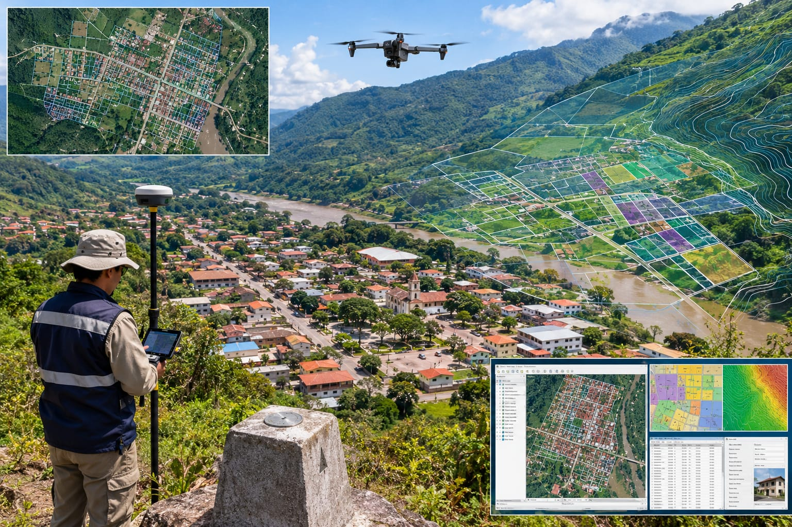

Inventario de Activos Fijos mediante GIS
Georreferenciación y mapeo espacial del inventario físico real de bienes (terrenos, infraestructura, vehículos) contrastado con los libros contables y financieros de municipios y empresas.
Solicitar información →